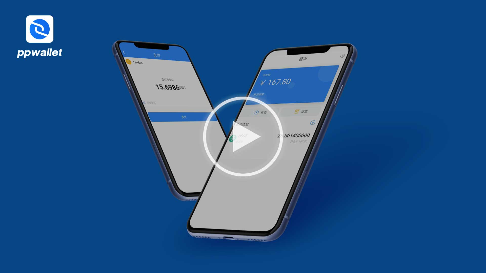

速学视频－用PP钱包存款至十博！

- PP钱包是10Bet十博合作的泰达币USDT钱包厂商，同时兼顾实用、方便与安全性。
- 从PP钱包存款到10Bet十博，无需任何手续费；但PP钱包与一般交易平台、电子钱包一样，任何存款/提款都将会有矿工费。
- 建议仅使用于10Bet十博存款/提款泰达币USDT。此钱包性质不适合用来储蓄，使用者需自行评估各个交易平台的风险。
- PP钱包APP目前只提供安卓手机用户。
- 交易数字货币是不可逆的，因此购买/转出时，请自行衡量需求及风险。建议使用者一次购足/卖出数字货币，避免过度频繁的交易不仅能提高交易的安全性，也能减少手续费的支出。
- 存款时，请确认扣除手续费后实际转出数字货币数量。存款上分将按照实际收到的数量为准。